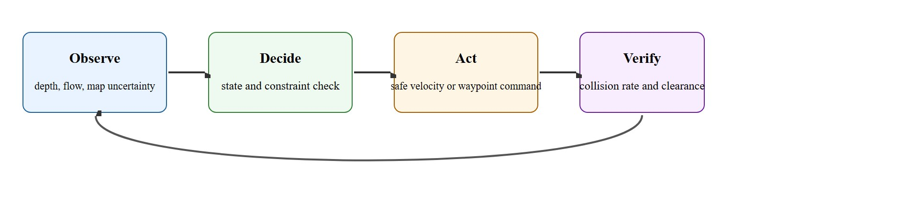
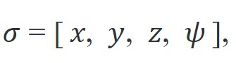
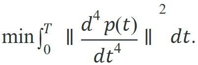

"A smooth trajectory is not a luxury; it is the only kind a quadrotor can actually fly."
A Careful Control Loop
This section assumes familiarity with visual-inertial odometry from section 8.7 and with 3D occupancy mapping from section 28.4. The local planning concepts introduced here are extended in section 30.4, which covers navigation and path planning in ground-robot contexts, and the minimum-snap trajectories derived here feed directly into the cascaded flight controller described in section 47.6.
A racing drone doing 80 km/h through a forest has roughly 40 milliseconds to detect a branch, decide to swerve, and commit to a new trajectory before impact. No remote pilot, no second chance. Aerial robots sit at the sharpest edge of embodied AI because their physics are unforgiving: they cannot stop, back up, or pause while thinking. The perception-navigation-avoidance loop that keeps them airborne is the same loop now pushing autonomous delivery, search-and-rescue, and infrastructure inspection from research labs into daily use. This section builds that loop from first principles: fusing depth and optical flow into a live obstacle map, designing a replanning cycle tuned to the vehicle's speed envelope, and measuring success by clearance margin rather than task completion alone.
Picture a quadrotor threading a doorway at 6 m/s: it has covered another 6 cm in the time it took you to read that clause, and if its obstacle map is even one cycle stale, the door frame it saw a moment ago is no longer where the planner thinks it is. That single unforgiving fact is what turns perception, navigation, and obstacle avoidance into a concrete embodied AI skill rather than a label. By the end you should be able to describe the full aerial perception-navigation-avoidance loop as one inspectable contract: how depth and optical flow become a live obstacle map, how a replanning cycle is tuned to the vehicle's speed envelope, and why clearance margin (not just task completion) is the metric that matters. Figure 47.3A previews this loop end to end, tracing a depth camera through an occupancy voxel map, a local planner, and IMU-plus-visual-odometry fusion that holds position in GPS-denied spaces. The core contract is: observe depth, optical flow, map uncertainty, and free-space estimate, choose safe velocity or waypoint commands under limited sensing, and judge the result with collision rate and clearance margin.
Concretely, each control cycle collapses those three subsystems into a single decision: the obstacle distance field (introduced below) tells the planner how much clearance any candidate trajectory has, the minimum-snap planner (also introduced below) turns the clearance-checked waypoints into a flyable reference, and the perception failure-mode discussion later in this section specifies when the drone should abandon that reference and fall back to a controlled hover instead. Reading the three parts of this section as one runtime decision, rather than three separate topics, is what makes the loop actionable.
For Perception, navigation, and obstacle avoidance, check the earlier frame, control, and model chapters against the exact interface used here: state variables, timing budget, action limits, and evaluation panel.
Aerial agents pay for every bad decision immediately. They are underactuated, energy-limited, wind-sensitive, and often safety-critical. For Perception, navigation, and obstacle avoidance, the decisive question is whether the loop can recover from the drone sees the obstacle too late for its braking distance.
Figure 47.3.1 maps the aerial perception interface from camera or lidar stream to state estimate, local obstacle model, trajectory candidate, and avoidance command. The important check is whether each edge names frame, latency, and confidence.
Consider a specific case. The Skydio 2 autonomy stack runs six fisheye cameras at 45 fps, maintains a 3D obstacle map in a 10-meter radius sphere around the vehicle, and replans local trajectories at roughly 100 Hz. The tight replan rate exists because at a cruise speed of 6 m/s the drone covers 6 cm between planning cycles. Any slower replan loop lets a half-meter branch appear between two consecutive maps with no time to brake. The EGO-Planner system (Zhou et al., 2020) takes a different tradeoff. It skips explicit map building entirely and optimizes trajectory coefficients directly against gradient information from a distance field, cutting latency to under 10 ms per replan on an onboard CPU. Both choices show that local planning and obstacle avoidance design is inseparable from the vehicle's speed envelope and compute budget. A traditional map-build-then-replan pipeline needs roughly 80 to 150 ms end to end; EGO-Planner's direct gradient approach cuts that to under 10 ms, roughly a 10x latency reduction, which in turn raises the cruise speed at which a fixed braking-distance margin can still be held before impact becomes critical (the exact speed gain depends on sensor range and deceleration authority, so treat the doubling as an illustrative order of magnitude rather than a guaranteed figure). A planner that is too slow for the vehicle's speed is not a planner; it is a post-crash report.

With the interface and its timing budget fixed, the next question is what kind of path the planner is allowed to hand the vehicle. The answer begins with why smoothness is non-negotiable.
Why does trajectory smoothness matter so much for aerial robots? A quadrotor cannot decouple its attitude from its acceleration: tilting forward is the only way to accelerate forward, so a jerky velocity profile demands rapid attitude changes, which in turn demand large and rapidly changing rotor thrusts. If those demands exceed what the motors can physically deliver, the vehicle leaves the planned path entirely. Smooth trajectories are therefore not an aesthetic choice; they are a physical necessity imposed by the coupling between translation and rotation in underactuated vehicles.
The obstacle distance field $\mathcal{D}(\mathbf{x})$ assigns to every point in space the distance to the nearest obstacle surface. For a drone replanning at 100 Hz, this representation is essential. A single lookup replaces expensive geometry queries, letting the planner evaluate clearance and compute a repulsive gradient without iterating over raw sensor points. At flight speed, testing against a raw point cloud at every cycle would saturate the onboard CPU before the avoidance loop could close. A Euclidean distance transform over the 3D voxel occupancy grid builds the field. Each occupied voxel seeds the transform, and the result is a dense grid of precomputed distances that supports constant-time lookup and finite-difference gradient estimation at query time.
Once obstacle-free waypoints are chosen, the planner must connect them with a path the vehicle can physically fly. The key structural fact is differential flatness (Mellinger and Kumar, 2011): a quadrotor's full state and the four motor inputs can be written as algebraic functions of four flat outputs and their derivatives,

the three positions and the yaw angle. This means you can plan entirely in the smooth $(x, y, z, \psi)$ space, and any sufficiently smooth trajectory there maps back to feasible thrust and attitude commands. Roll and pitch are not planned directly; they fall out of the acceleration profile.
Think of differential flatness like a skilled chef who only needs to specify a dish's final flavor profile: once you name the taste, the required sequence of heat, timing, and stirring is determined for you, not planned separately. For a quadrotor, once you specify the path through (x, y, z) and the heading angle, the required tilt angles and rotor thrusts are not free choices; they are forced by the physics. You plan only four smooth curves, and the entire body attitude comes along for free, derived rather than designed.
Because rotor thrust is proportional to acceleration and the body moments (the torques that rotate the airframe about its own center of mass) depend on the third and fourth derivatives of position, the natural cost to minimize is the snap, the fourth derivative of position:
In other words: minimizing snap is not an arbitrary mathematical convenience, it is the direct algebraic consequence of the differential-flatness fact just above, since penalizing the fourth derivative of position is the same as penalizing how hard the body moments have to swing.

Minimizing snap minimizes the aggressiveness of the motor commands, so the trajectory stays inside the actuator envelope and the angular accelerations stay small. Each segment between waypoints is represented as a polynomial in $t$; for a snap objective the minimizing polynomial per segment is degree 7 (eight coefficients), constrained so that position passes through the waypoints and velocity, acceleration, and jerk stay continuous at the joins. The result is a piecewise-polynomial trajectory whose every derivative is well behaved, which is exactly what the cascaded flight controller of Section 47.6 needs as a reference.
Input: ordered waypoints $\mathbf{p}_0, \mathbf{p}_1, \dots, \mathbf{p}_N \in \mathbb{R}^3$, segment time allocations $T_1, \dots, T_N$, maximum thrust-to-weight ratio $\alpha = T_{\max}/mg$, obstacle distance field $\mathcal{D}(\mathbf{x})$, clearance margin $d_{\min}$
Output: piecewise-polynomial trajectory $\sigma(t) = [x(t), y(t), z(t), \psi(t)]$ satisfying differential flatness, dynamically feasible, and collision-free with clearance $\geq d_{\min}$
Aerial perception and navigation couple camera exposure, visual-inertial odometry, depth or obstacle estimates, local trajectory generation, and collision checking. The log needs timestamps and frames at each link so a near miss can be traced to sensing latency, map aging, planner horizon, or control lag.
Visual-inertial odometry serves as the state estimation backbone on most camera-equipped drones. It degrades in three well-documented conditions. First, featureless surfaces such as white walls or still water give the optical flow tracker no stable keypoints to follow. Second, rapid brightness changes (flying from shadow into direct sunlight) cause camera auto-exposure to lag tens of milliseconds and corrupt the feature-matching step. Third, high-vibration flight lets IMU pre-integration accumulate error faster than the camera can correct it. In every case, the trajectory controller sees a sudden jump in estimated position and tries to correct aggressively, which often worsens the instability. The practical fix is to fuse a redundant modality. A downward-facing optical flow sensor covers the featureless-surface case. A barometer or ultrasonic altimeter gives a vertical-state fallback when visual odometry fails. Understanding these failure modes in advance shapes sensor suite selection and the monitoring logic that triggers a controlled hover when confidence drops below threshold.
Generate a minimum-snap trajectory through three waypoints in one axis. We fit a degree-6 polynomial that passes through positions 0, 2, 1 at times 0, 1, 2 s, with zero velocity and zero acceleration at both ends (a rest-to-rest segment). Minimizing snap with these endpoint constraints yields a unique polynomial, so we can solve the constraint system directly with numpy.linalg.solve rather than running a full quadratic program.
# Minimum-snap polynomial through 3 waypoints (single axis), rest to rest.
import numpy as np
t_wp = np.array([0.0, 1.0, 2.0]) # waypoint times
p_wp = np.array([0.0, 2.0, 1.0]) # waypoint positions
T, deg = 2.0, 6 # degree-6 poly: 7 coefficients
def basis(t, d):
"""Row of the d-th derivative of [1, t, t^2, ..., t^6] at time t."""
r = np.zeros(deg + 1)
for i in range(deg + 1):
if i >= d:
coef = 1
for k in range(d):
coef *= (i - k)
r[i] = coef * t ** (i - d)
return r
A, b = [], []
for tw, pw in zip(t_wp, p_wp): # pass through every waypoint
A.append(basis(tw, 0)); b.append(pw)
for tw in (0.0, T): # zero velocity and acceleration at the ends
A.append(basis(tw, 1)); b.append(0.0)
A.append(basis(tw, 2)); b.append(0.0)
c = np.linalg.solve(np.array(A), np.array(b)) # 7 constraints, 7 unknowns
print("polynomial coefficients:", np.round(c, 3))
print("position at waypoints :", [round(float(basis(t, 0) @ c), 3) for t in t_wp])
print("end velocities :", round(float(basis(0, 1) @ c), 4),
round(float(basis(T, 1) @ c), 4))Expected output: coefficients that reproduce the waypoint positions and zero endpoint velocities. The diagnostic field is the waypoint check: if a position is off, the time allocation or the constraint matrix is wrong, and no amount of controller tuning downstream will fix a reference the planner never actually passes through.
Trace the degree-6 fit through waypoints (0, 2, 1) at times (0, 1, 2) s. The unknowns are seven coefficients $c_0 \dots c_6$ of $p(t) = c_0 + c_1 t + \dots + c_6 t^6$. We stack seven constraints into $A\mathbf{c}=\mathbf{b}$.
Row 1 (position at $t=0$): basis row $[1,0,0,0,0,0,0]$, so $c_0 = 0$.
Row 2 (position at $t=1$): basis row $[1,1,1,1,1,1,1]$, so $c_0+c_1+\dots+c_6 = 2$.
Row 3 (position at $t=2$): basis row $[1,2,4,8,16,32,64]$, so $c_0+2c_1+4c_2+\dots+64c_6 = 1$.
Row 4 (velocity at $t=0$): derivative basis $[0,1,0,0,0,0,0]$, so $c_1 = 0$.
Row 5 (acceleration at $t=0$): second derivative basis $[0,0,2,0,0,0,0]$, so $2c_2 = 0$, giving $c_2 = 0$.
Row 6 (velocity at $t=2$): $[0,1,4,12,32,80,192]$, so $c_1+4c_2+12c_3+32c_4+80c_5+192c_6 = 0$.
Row 7 (acceleration at $t=2$): $[0,0,2,12,48,160,480]$, so $2c_2+12c_3+48c_4+160c_5+480c_6 = 0$.
Rows 1, 4, 5 immediately fix $c_0=c_1=c_2=0$ (the three leading zeros, the rest-to-rest signature). Substituting into the remaining four equations leaves a 4x4 system in $c_3 \dots c_6$, which solves to $c_3=13.25$, $c_4=-18.937$, $c_5=9.187$, $c_6=-1.5$, exactly the printed coefficients. Sanity check: $p(1) = 13.25 - 18.937 + 9.187 - 1.5 = 2.0$, hitting the middle waypoint on the nose.
For Perception, navigation, and obstacle avoidance, the hand-built record exposes the flight fields; PX4, ROS 2, MAVLink, gym-pybullet-drones, Aerial Gym, and safe-control-gym should preserve the same schema.
That single-axis solve is the smallest piece of the loop that can fail visibly; the recipe below scales the same discipline up to the full perception-navigation-avoidance contract so failures stay just as easy to localize.
A common assumption is that perception, navigation, and obstacle avoidance are independent pipeline stages: perception outputs a map, navigation consumes it, and avoidance acts on the result. In aerial embodied AI this is wrong because the three stages share a single hard timing budget set by vehicle speed. At 6 m/s the drone covers 6 cm between 100 Hz planning cycles, so a slower perception front-end invalidates the downstream planner regardless of how correct the map geometry is. The correct mental model is co-design: the sensor latency, the planner replan rate, and the cruise speed are three parameters of one constraint, and relaxing any one requires tightening at least one other. Design perception, navigation, and avoidance together against a shared latency and compute budget, not as components that can be swapped independently.
Trajectory feasibility near obstacles with thrust limits is the trap. Minimum-snap will happily route a smooth curve through a tight gap, but if the time allocation is too short the required acceleration exceeds the thrust the rotors can deliver, so the vehicle cannot stay on the reference and clips the obstacle. The fix is to couple the smoothness objective to the actuator envelope: check that peak acceleration along every segment stays below $T_{\max}/m - g$, and if it does not, lengthen the segment time or relax the corridor. A trajectory that is geometrically collision-free but dynamically infeasible is more dangerous than a slow one, because it looks safe in the plot.
When using gym-pybullet-drones or Aerial Gym to validate a minimum-snap trajectory before deployment, set the physics timestep to 1/500 s (the AGGR_PHY_STEPS=1 default runs at only 48 Hz, which is too coarse to catch thrust-saturation spikes lasting 5 to 10 ms). Check the per-step rpm output: if any rotor exceeds 98% of its maximum RPM defined in DroneModel.properties, shorten the segment duration by 20% and recheck before logging the trajectory as feasible. A trajectory that passes the 48 Hz sim but fails at 500 Hz is dynamically infeasible in practice even though it looks clean in the position plot.
During the 2019 AlphaPilot autonomous drone racing challenge, several teams reportedly found that logging only gate passage success masked the real failure: the depth estimator was typically reliable at 4 m range but produced 30 to 40 cm errors at 8 m, close to the distance at which the planner committed to its approach angle. The fix required logging the per-frame depth confidence score from the stereo matcher alongside the chosen waypoint, so the team could correlate which gate attempts failed at the planning step versus the control step. In gym-pybullet-drones validation, the equivalent check is recording the per-step distance-to-nearest-obstacle alongside RPM saturation events: a near-miss that never triggered RPM saturation points to a perception gap, while one that did points to a dynamic feasibility gap in the trajectory.
Skydio's X10 inspection drone flies GPS-denied through bridge undersides and cell towers, fusing six navigation cameras into a 3D obstacle map and replanning local trajectories onboard to hold a fixed standoff distance from steel it has never seen before. The same perception-navigation-avoidance loop derived here lets it autonomously circle a transmission tower while keeping a clearance margin, exactly the metric this section argues for, rather than relying on a pilot's reflexes near energized lines.
For perception, navigation, and obstacle avoidance, the useful test is simple: could a teammate point to the log line, plot, or trace that proves the idea changed the agent's next action?
Foundation models for aerial scene understanding (2024-2026). Vision-language models are being adapted as zero-shot obstacle classifiers and semantic map builders for drones. The Aerial-GPT line of work (Kuckreja et al., 2024, "AerialVLP: Vision-Language Pre-training for UAV Remote Sensing") shows that a single VLM (Vision-Language Model) backbone can label vegetation, power lines, and human obstacles in one forward pass, replacing bespoke detectors for each category. The open problem is latency: as of 2024, ViT (Vision Transformer)-based encoders typically run at 5 to 15 Hz on onboard hardware, roughly one to two orders of magnitude too slow for sub-50 ms replanning budgets at competition speeds.
Learned trajectory optimization with neural distance fields (2024-2026). Instead of computing Euclidean distance transforms on voxel grids, work from 2023 to 2024 trains neural implicit representations of obstacle geometry directly from depth streams, then differentiates through them during trajectory optimization. FASTER-LIO and the NF-Planner (Zhu et al., 2024) demonstrate that a NeRF-style occupancy network can serve as a smooth, differentiable collision cost without explicit voxelization, in early reports roughly halving memory footprint and allowing the optimizer to follow obstacle-surface gradients analytically. Active research is pushing these networks to update incrementally at sensor frame rate rather than rebuilding from scratch.
So far: this Research Frontier block has covered three separate bets for pushing the loop past today's limits (VLM-based semantic obstacle labeling, neural distance fields replacing voxel grids, and RL-trained agile-flight policies); the next paragraph compares that third bet against the classical geometric planner this section built.
Agile flight via large-scale reinforcement learning and sim-to-real transfer (2024-2025). Champion-Level Drone Racing via Deep Reinforcement Learning (Kaufmann et al., Nature 2023, with follow-up deployment results published through 2024) established that reinforcement learning policies trained purely in simulation, then carried across the sim-to-real gap, can outperform human expert pilots on closed gate courses, but the policy's obstacle avoidance margin degrades sharply in unstructured environments with novel geometry. Counterintuitively, the faster RL policy collides more often in novel cluttered spaces than a slower geometric planner does: because it was trained to explore aggressively at high speed, it commits to trajectories that the geometric planner would have rejected as too uncertain. Groups at ETH Zurich and MIT CSAIL are investigating how to combine the speed of RL-derived reflexes with the geometric guarantees of model-based planners through residual policy layers that activate only when a certified unsafe region is detected.
Open problem for PhD students. Existing agile-flight benchmarks (AlphaPilot, DodgeDrone) fix the environment geometry between runs, so policies can implicitly memorize obstacle layouts during training. A rigorous open challenge is certifiable real-time obstacle avoidance in procedurally generated unknown environments at speeds above 10 m/s, with formal bounds on collision probability rather than empirical clearance statistics. Combining control-barrier functions, where a control-barrier function is a scalar safety certificate constructed so that keeping it non-negative provably keeps the vehicle's state out of a defined unsafe region, with learned perception uncertainty estimates to produce such a certificate on a sub-10 ms onboard compute budget remains unsolved.
Can you name the observation, state estimate, action, success metric, and most likely failure mode for perception, navigation, and obstacle avoidance? If not, the system boundary is still too vague.
Perception, navigation, and obstacle avoidance becomes robust when three claims stay separate: a conceptual claim for why the skill should work, a systems claim for which interface changes, and an evidence claim naming the same-panel metric that would convince a skeptical builder.
For Perception, navigation, and obstacle avoidance, keep flight physics, airspace constraint, battery state, timing, wind, and safety monitor inside the evidence artifact rather than in a post-run explanation.
| Tool or Library | Role in the Topic | Builder Advice |
|---|---|---|
| Aerial Gym and ROS 2 perception logs | Main practical route for Perception, navigation, and obstacle avoidance | Use it after the baseline contract is explicit and keep the same artifact schema. |
| ROS 2 logs | Interface and timing evidence | Record observations, commands, controller status, and verifier events together. |
| Same-panel evaluation script | Construct-matched comparison | Compare methods only when metrics are co-computed on one scenario panel. |
For Perception, navigation, and obstacle avoidance, the coordinate-frame link is operational: every artifact should name frame, timestamp, units, safety constraint, and the downstream evaluator that will consume it.
Create one scenario for Perception, navigation, and obstacle avoidance, run the baseline and the Aerial Gym and ROS 2 perception logs route on the same inputs, then label each failure as perception, state, planning, control, timing, data coverage, or evaluation.
When Perception, navigation, and obstacle avoidance fails, do not collapse the whole method into one score. Assign the failure to a subsystem, rerun one perturbation that isolates the suspected cause, and keep the trace as a reusable diagnostic case.
Mellinger, D. and Kumar, V. (2011). "Minimum Snap Trajectory Generation and Control for Quadrotors." IEEE ICRA. Zhou, B., Gao, F., Wang, L., Liu, C., and Shen, S. (2020). "EGO-Planner: An ESDF-Free Gradient-Based Local Planner for Quadrotors." IEEE RA-L. Loianno, G. et al. (2017). "Estimation, Control, and Planning for Aggressive Flight With a Small Quadrotor." Kaufmann, E., Bauersfeld, L., Loquercio, A., Mueller, M., Koltun, V., and Scaramuzza, D. (2023). "Champion-Level Drone Racing Using Deep Reinforcement Learning." Nature. Tooling: PX4, ROS 2, MAVLink, gym-pybullet-drones, Aerial Gym, safe-control-gym, Isaac Lab.
Use these sources to verify differential flatness, minimum-snap planning, ESDF-free gradient avoidance, GPS-denied state estimation, and the simulator schemas referenced above.
Perception, navigation, and obstacle avoidance is useful when it makes the perception-action loop more reliable, not when it merely adds a more impressive model name.
Design a same-panel experiment for Perception, navigation, and obstacle avoidance. Specify the scenario set, the baseline, the Aerial Gym and ROS 2 perception logs library route, the metric computation, and one perturbation that targets this failure: the drone sees the obstacle too late for its braking distance.
Beginner (weekend): Build a minimum-snap trajectory planner for a single axis in Python using NumPy and visualize the position, velocity, and snap profiles through five waypoints using Matplotlib; the key challenge is setting up the banded constraint matrix so that velocity and acceleration stay continuous at interior joins without assembling the full dense system. Intermediate (1-2 weeks): Integrate the trajectory planner with gym-pybullet-drones (PyBullet backend) and a simple occupancy grid built from depth images, then train a ROS 2 node that replans at 50 Hz whenever any sampled point falls within a clearance margin; the key challenge is keeping total perception-to-command latency under 20 ms so the drone can cruise at 3 m/s without the map aging out between replans. Advanced (3-4 weeks): Reproduce the EGO-Planner gradient-based replanning loop in Isaac Lab, replacing the explicit voxel map with a distance-field updated from a simulated depth camera, and benchmark safe cruise speed against the map-build-then-replan baseline using minimum clearance margin as the primary metric; the key challenge is co-designing the camera exposure time, the distance-field update rate, and the planner horizon so the three constraints close into a consistent latency budget.